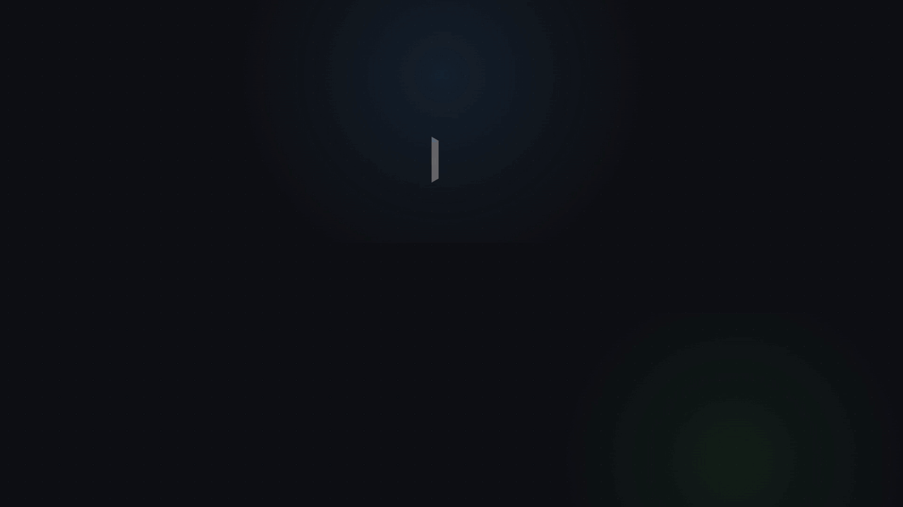
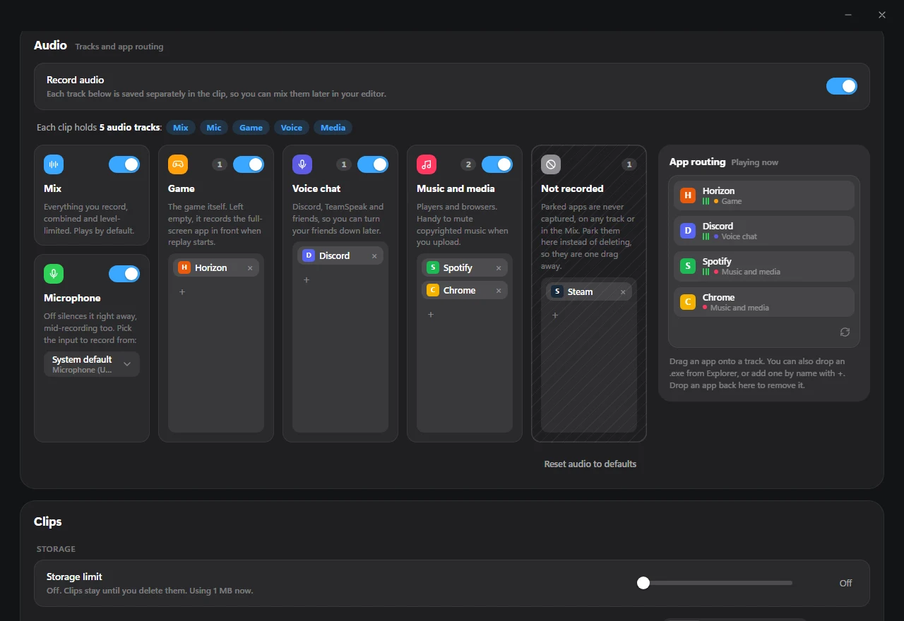
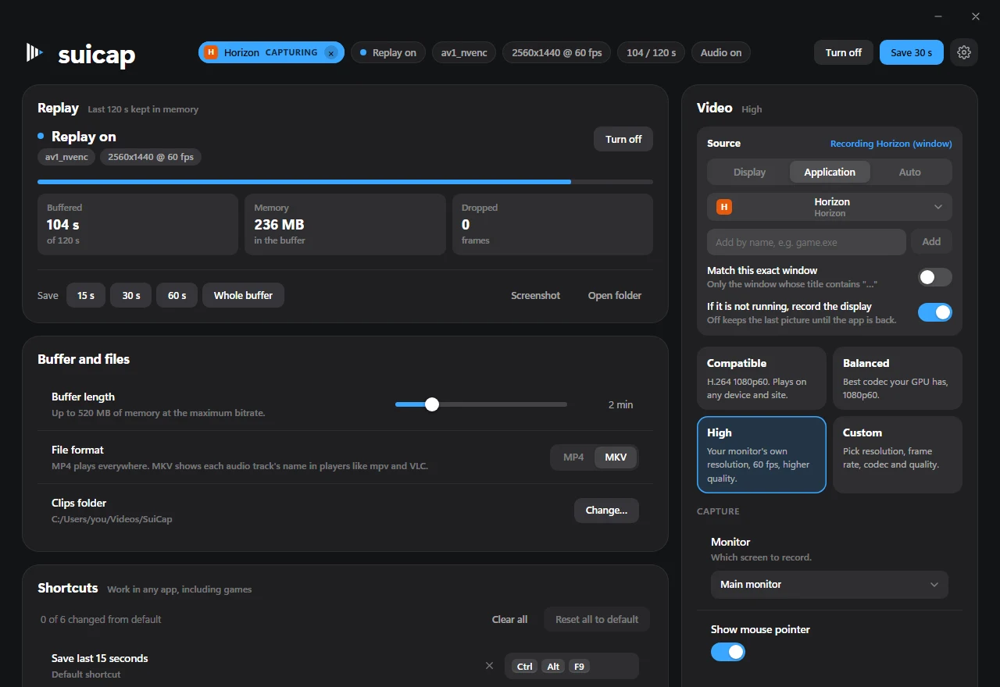
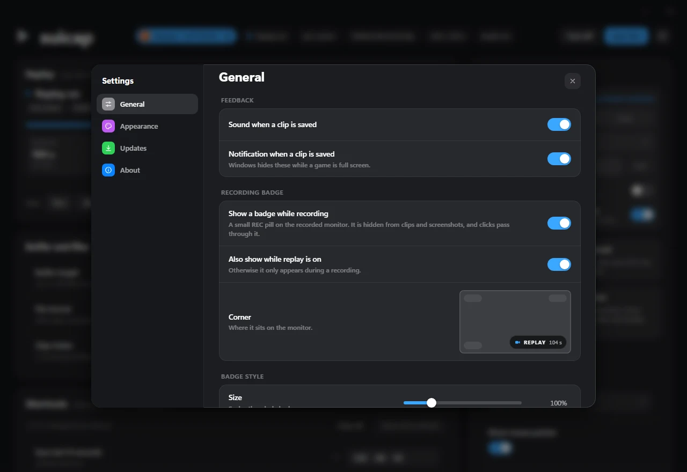

Never miss the moment. Save it after it happens.
Always-on GPU replay-buffer recorder for Windows with zero-copy D3D11 encoding, five isolated audio tracks, and zero game injection.

Compressed packets in RAM, ready on one hotkey
Keep 10 seconds to 10 minutes buffered in memory without touching disk until you press save. Presets pick the cleanest encoder path for your GPU, or switch to Custom for resolution, frame rate, codec, and quality.
MKV preserves named audio tracks (Mix, Mic, Game, Voice, Media) in mpv and VLC using Opus audio.
Five isolated audio tracks, routed per application
WASAPI process loopback splits your game, voice chat, music players, and microphone onto separate tracks. Toggle any track below to test strict live mute — silenced tracks disappear from the Mix too.
Mix
Combined and level-limited. Plays by default in media players.
Microphone
Follows your input automatically if unplugged and replugged.
Game
Or follows the full-screen app in front when left empty.
Voice chat
Keep Discord or TeamSpeak separate so you can turn friends down later.
Music and media
Mute copyrighted playlists mid-session or before uploading.
Not recorded
Apps parked here never enter any track or the Mix.

Live OS detection, zero noise
Running apps surface automatically in the tray as Windows reports audio sessions. Drag an app card onto
any track, drop an .exe from Explorer, or park apps in Not recorded so
notifications and background streams stay out of every clip.
Switching a track off mutes its applications everywhere immediately — both on its isolated track and in the combined Mix.
Engineered for under 1% CPU and zero frame drops
Video frames stay in GPU memory from display capture to hardware encoder, avoiding CPU copies, driver locks, and game hooks.
Zero-copy D3D11 hardware pipeline
Captured frames move directly on the GPU through VideoProcessorBlt into
FFmpeg D3D11 hardware surfaces, encode via NVENC, AMF, or Quick Sync, and live in a bounded GOP ring
buffer until snapshot export.
Anti-cheat safe by design
No hooks inside your game process — just standard Windows capture and hotkey APIs.
- Zero DLL injection: uses Windows Graphics Capture and Desktop Duplication only.
-
Zero keyboard hooks: global shortcuts bind via
RegisterHotKey. - Self-recovering: rebuilds automatically if a display, window, or driver resets.
Capture a display, window, or full-screen game
Switch between Display, Application (with exact window title
matching and display fallback), or Auto full-screen tracking with
Ctrl+Alt+F7.

Stealth recording badge, lossless trim & checksum updates
A click-through corner pill shows buffer status while staying excluded from clips and screenshots. The built-in Clips library trims highlights losslessly into a new copy while keeping the original intact, and self-updates verify every installer against its release checksum.

Default shortcuts & quick start
Every hotkey works inside full-screen games and can be rebound, cleared, or reset. Prefer automation or
headless soaks? suicap-cli shares the exact same Rust core.
Default highlight capture: saves the last 30 seconds and flashes CLIP SAVED.
- 1Install from GitHub Releases and launch SuiCap from the Windows tray.
- 2Press Turn on to arm the zero-copy GPU replay buffer.
- 3Choose Display, pick an Application, or leave on Auto.
- 4Drag Discord onto Voice chat and music apps onto Music and media.
- 5Press
Ctrl+Alt+F10after a play and trim clips directly on the Clips page.
bun install .scripts/"SuiCap Fetch FFmpeg.bat" bun run tauri dev suicap-cli replay --buffer 120 --display 1